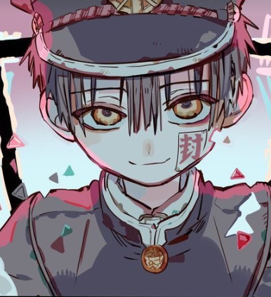
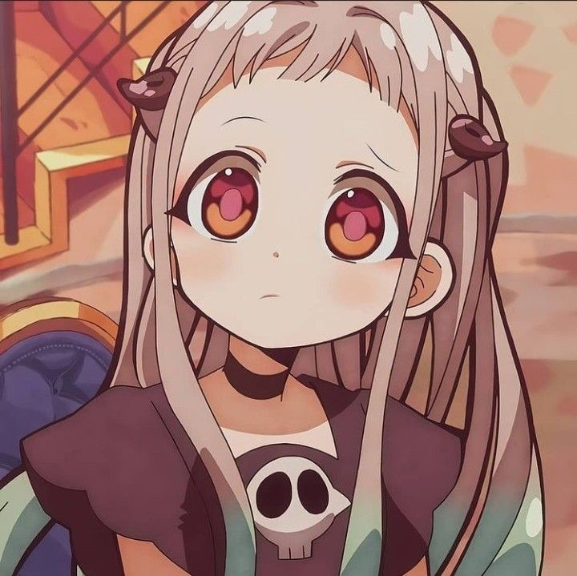

Tiny Light
Akari Kitō

Song Lyrics
優しさに触れて
残る温度 消えないまま
「愛しい」と言えたら
心は軽くなるかな
閉ざした扉の向こうで
かすかな声が聞こえてる
踏み出すことさえもできないから
孤独に寄り添ってる
まだこの胸の中 息づいたまま
小さな灯火のような思いを
風に吹かれぬように 雨に濡れないように
ずっと 抱き締めてた
ただ 真っ直ぐなまま願う強さも
泣きだしそうになる脆い自分も
君がいなきゃ知らなかったんだよ
偶然の中で 運命を見つけた
瞳閉じるたび 記憶の海 漂っては
二人夢の跡 面影を探してたんだ
変わらないモノクロの日々に
君が色を添えてくから
滲んだダークさえも いつの間にか
意味を持ち始めてる
まだ この胸の中隠したままの
痛いほど愛おしいこんな思いを
いつか消えてしまう その前に
届けたい人は 君だけなんだ
どんな涙も どんな笑顔も
全ては君のためにあるから
まだこの胸の中 息づいたまま
小さな灯火のような思いを
風に吹かれぬように 雨に濡れないように
ずっと 抱き締めてた
ただ 真っ直ぐなまま願う強さも
泣きだしそうになる脆い自分も
君がいなきゃ知らなかったんだよ
偶然の中で 運命を見つけた
君がいるだけで 世界は変わった